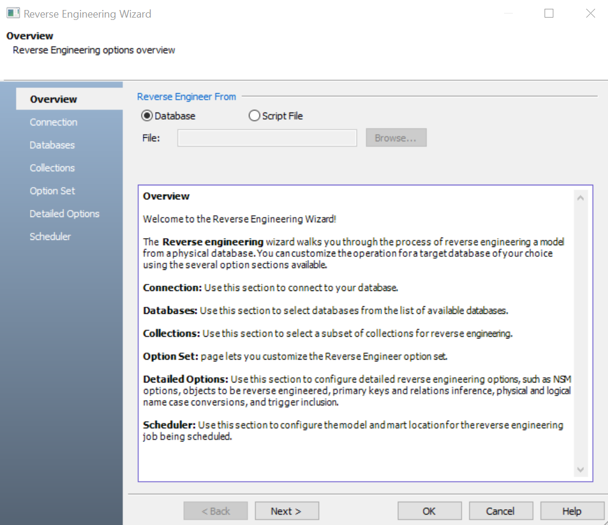
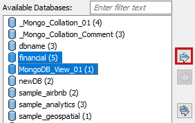
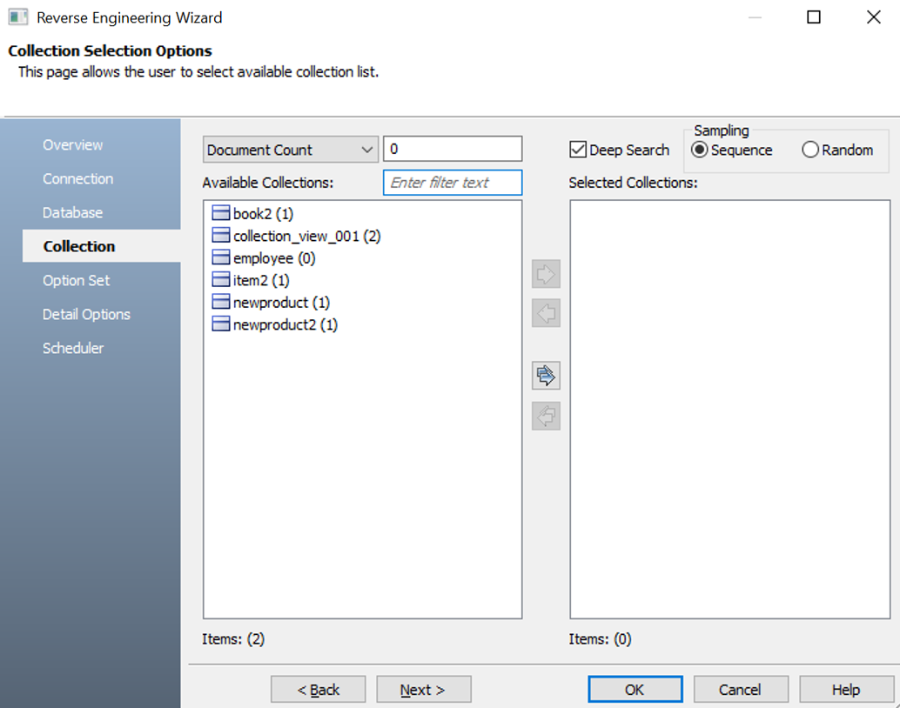
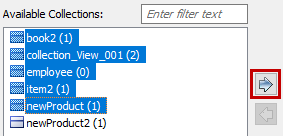
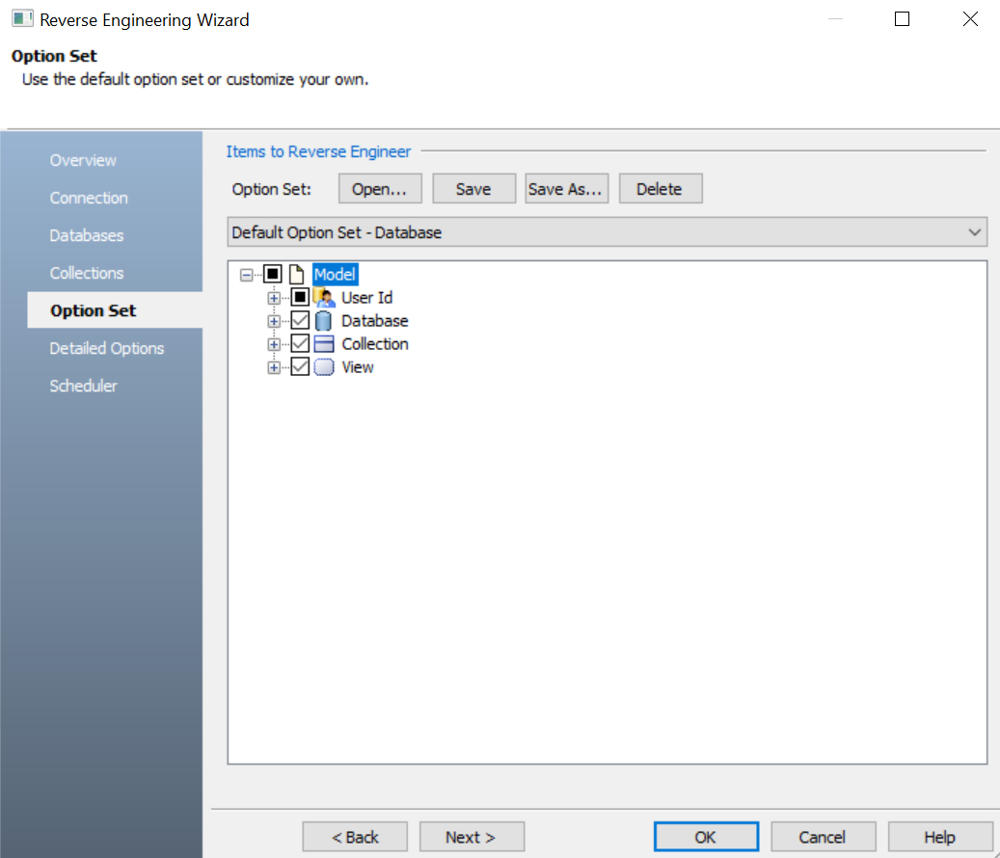

In erwin Data Modeler (DM), click Actions > Reverse Engineer.
The New Model screen appears.
Click Logical/Physical and set a Database.
Click Next.
The Reverse Engineering Wizard appears.

Click one of the following options:
-
Database: Use this option to reverse engineer a model from a database.
If you click Database, continue to step 5.
-
Script File: Use this option to reverse engineer a model from a script. Selecting this option enables the File field. Click Browse and select the a script file from your directory.
If you click Script File, go to step 8 below and ensure that Document Count or Document % is not set to zero (0).
Click Next.
The Connection tab for a database appears. Use this section to connect to the database for reverse engineering models. You can connect to the database directly or using a connection string. Similarly, for other database types, you can use JDBC, ODBC, or other connection methods based on your requirement.
For more information, refer to the Database Connection Parameters topic or Reverse Engineering Options for Databases.
In the following image, for example, the connection is being established using a connection string.

Click Connect.
On a successful connection, your connection information is displayed under Recent Connections.
Click Next.
The Database tab appears. It displays a list of available databases. Similarly, for other databases, it displays database specific section for object selection.

Under Available Databases, select the databases that you want to reverse engineer. Then, click  .
.

This moves the selected databases under Selected Databases.
Click Next.
The Collection tab appears. It displays a list of available collections in the databases that you selected in step 8.
Similarly, for other databases, it displays database specific section for object selection.

Use the following options:
-
Document Count/Document (%): Use this option to specify the number of documents or percentage of total records that the newly generated model schema would contain.
-
Deep Search: Use this option to specify whether the deep search algorithm is used to retrieve the right samples for schema generation.
-
Sampling: Use the Sequence or Random sampling methods to sample records in the selected collections. Sampling enables you to retrieve right estimates for accurate collection schema generation.
Under Available Collections, select the collections that you want to reverse engineer. Then, click .

This moves the selected collections under Selected Collections.
Click Next.
The Option Set tab appears. It displays the default option set. You can either use the default or a custom option set.

Click Next.
The Detail Options tab appears. Set up appropriate options based on your requirement.
Click Next.
The Scheduler tab appears. Set up the scheduler options on this section.
The Scheduler is available only when you schedule a reverse engineering job using erwin DM Scheduler. For more information on scheduler and their options, refer to

Click OK.
The reverse engineering process starts.
Once the process is complete, based on your selections, a schema is generated and a model is created.